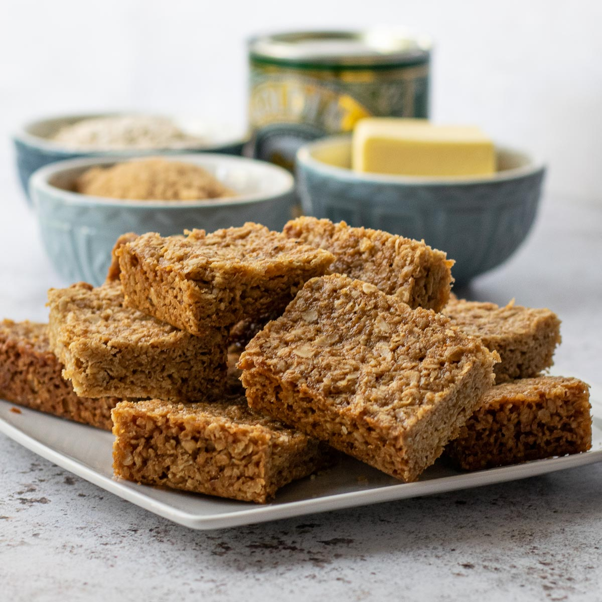

Flapjack

Simple flapjacks
A simple recipe for oaty, protein filled, flapjacks.
Known as a sweet treat, flapjacks are nutritional and a smart source of energy. With this recipe we will be making a filling energy source with added whey protien to create a gym
lovers snack, or good morning energy wake-up treat.
Ingredients
- 120g rolled oats
- 100g peanut butter (smooth or crunchy)
- 150g of semi-skimmed milk
- 30g whey protien
- 15g of honey
Recipe
- Place whey and oats into large bowl; mix together.
- Add milk and peanut butter and mix together until evenly mixed.
- Add honey and stir evenly throughout the mixture.
- Line a baking tray with grease proof paper and greace with butter.
- Spread mixture onto paper (keep it between 1-3cm thickness).
- Place in fridge for 30 minutes.
- Pre-heat oven to 190 degrees C (gas mark 5)
- Cook for 10-12 minutes in oven.
- Remove, slice and leave to cool.(Enjoy!)
Home Page